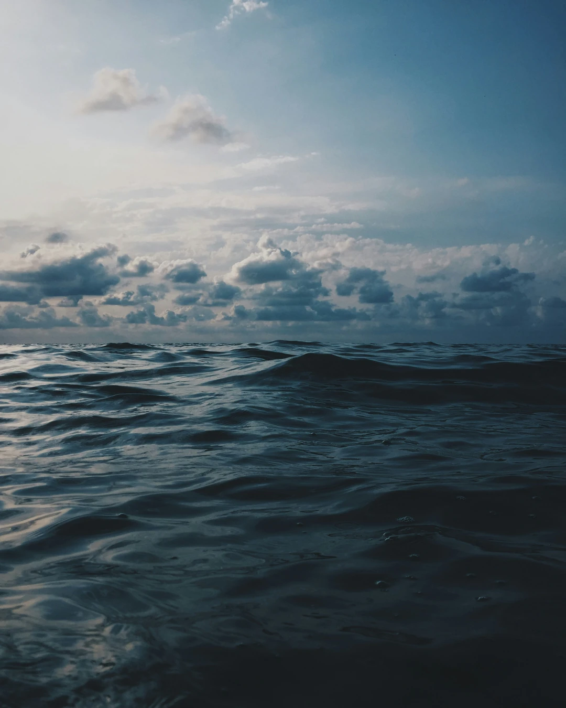
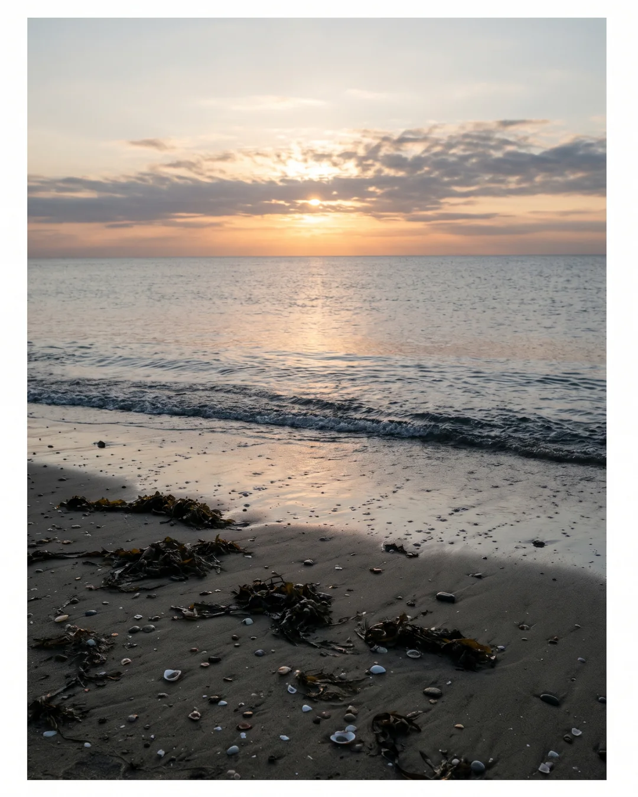

Caso n.º 22 · Mar
Sobre este caso
El caso n.º 22 está cerrado. Fue el caso diario del 22 de noviembre de 2026 y su tema fue Mar. Los detectives de aquel día tuvieron dos retos: cinco imágenes que clasificar en fotografías reales y generadas por IA, y cinco afirmaciones de una frase que clasificar en datos y bulos.
- Imágenes generadas por IA: 4 de 5
- Bulos: 2 de 5
Aquí tienes todas las respuestas. Cada imagen generada por IA trae el prompt que la creó, y cada afirmación, la verdad que hay detrás y los detalles que merece la pena recordar, para que compruebes qué se te escapó.
Uno de los bulos: «Existen orcas que han aprendido a imitar a la perfección los motores de los barcos para atraer comida.» La verdad: No hay evidencias de que las orcas imiten motores, y el ruido ahuyentaría a la mayoría de sus presas.
¿Quieres afinar la vista? Lee nuestra guía para detectar imágenes de IA o nuestra guía para detectar un bulo y luego juega el caso de hoy.
Imágenes
-
Imagen 1

IA
La confesión del sospechoso
Mar agitado rompiendo contra las rocas de un acantilado en un día nublado, con espuma blanca saltando y salpicaduras congeladas en el aire; teleobjetivo de 200 mm, colores grises y verdosos apagados.
-
Imagen 2

REAL
Fotografía real
-
Imagen 3

IA
La confesión del sospechoso
El mar en calma al amanecer visto desde una playa vacía, con el sol todavía bajo detrás de una capa de nubes finas y algunas algas y conchas en la arena mojada del primer plano; 35 mm a f/8, horizonte ligeramente inclinado.
-
Imagen 4

IA
La confesión del sospechoso
Una playa en invierno con el mar de fondo y unas pocas personas abrigadas paseando por la orilla, una de ellas con un perro; cielo encapotado, viento levantando la arena y fondo con edificios desenfocados.
-
Imagen 5

IA
La confesión del sospechoso
Un pequeño puerto pesquero con barcas de madera amarradas meciéndose sobre el agua, redes amontonadas en el muelle y gaviotas posadas en los postes; luz de media mañana y reflejos irregulares en el agua.
¿Dato o Bulo?
-
Afirmación 1
BULO «Existen orcas que han aprendido a imitar a la perfección los motores de los barcos para atraer comida.»
No hay evidencias de que las orcas imiten motores, y el ruido ahuyentaría a la mayoría de sus presas.
- Las orcas sí tienen dialectos complejos y pueden imitar algunos sonidos.
-
Afirmación 2
BULO «El récord a la mayor ola jamás medida no ocurrió en la superficie, sino bajo el mar de Banda en 2021.»
La mayor ola registrada fue de superficie: un megatsunami de 524 m en la bahía de Lituya (Alaska) en 1958.
- Lo originó un desprendimiento de tierra.
- Las olas internas del mar de la China Meridional pueden superar los 100 m.
-
Afirmación 3
DATO «Existen «piscinas de salmuera» submarinas que resultan letales para la mayoría de las criaturas que entran en ellas.»
Su agua, extremadamente salada, es tan densa que no se mezcla con el océano, carece de oxígeno y contiene gases tóxicos como el sulfuro de hidrógeno.
- Un ejemplo famoso es el «Jacuzzi de la Desesperación», en el golfo de México.
-
Afirmación 4
DATO «Los océanos del mundo contienen aproximadamente 20 millones de toneladas de oro.»
Así lo estiman los científicos, pero está disuelto en el agua del mar en cantidades microscópicas y hoy extraerlo es inviable.
- No hay pepitas ni cofres sumergidos.
-
Afirmación 5
DATO «La cordillera más larga del planeta es submarina.»
Es el sistema de dorsales oceánicas, de unos 65.000 km, mucho más largo que cualquier cordillera terrestre como los Andes.
- La dorsal mesoatlántica forma parte de él.
- Se forma en los límites de las placas tectónicas.